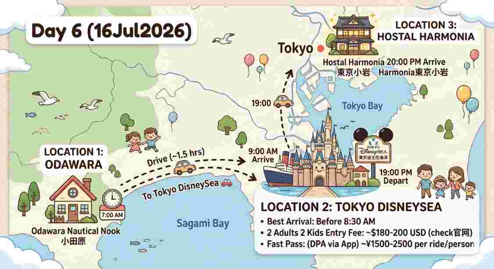

活動： 寶貝們起床揉揉眼囉！辦理退房，將行李裝上車。
地址： 3 Chome-1-16 Hamacho, Odawara, Kanagawa 250-0004, Japan
🌞 早晨 7:15 準時踩下油門出發，避開最核心的市區上班塞車潮！
車程預估： 約 1 小時 45 分鐘（全長約 101 公里，提早出發路況更順暢）。
自駕推薦路線：
官方網站： 東京迪士尼海洋中文官方網站
2026年7月旺季票價參考：
活動： 揮別迪士尼！自駕前往今晚的溫馨旅宿辦理入住。
民宿地址： 5 Chome-15-21 Nishikoiwa, Edogawa City, Tokyo 133-0059, Japan
🗺️ 導航連結： 點我開啟 Google Maps 導航至民宿
🚗 夜間開車路線：